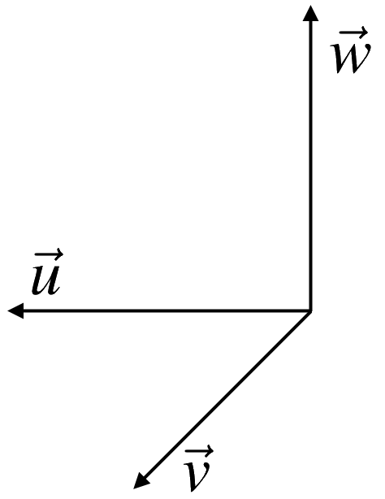

The Cross Product¶
Right Hand System of Vectors: Three vectors, \(\vec{u}\), \(\vec{v}\), \(\vec{w}\) form a right hand system if when you extend the fingers of your right hand along the direction of vector \(\vec{u}\) and close them in the direction of \(\vec{v}\), the thumb points roughly in the direction of \(\vec{w}\).
For an example of a right handed system of vectors, see the following picture.
{kind=link}
In this picture the vector \(\vec{w}\) points upwards from the plane determined by the other two vectors. Point the fingers of your right hand along \(\vec{u}\), and close them in the direction of \(\vec{v}\). Notice that if you extend the thumb on your right hand, it points in the direction of \(\vec{w}\).


Try using your left hand and you will see that the vector \(\vec{w}\) would need to point in the opposite direction.
Coordinate vectors: The coordinate vectors are unit vectors in the direction of the \(x\), \(y\), and \(z\) axes of a three dimensional Cartesian coordinate system.

Note that the special vectors, \(\vec{i}\), \(\vec{j}\), \(\vec{k}\) will always form a right handed system. If you extend the fingers of your right hand along \(\vec{i}\) and close them in the direction \(\vec{j}\), the thumb points in the direction of \(\vec{k}\).

Geometric Definition of Cross Product: Let \(\vec{u}\) and \(\vec{v}\) be two vectors in \(\mathbb{R}^3\). Then the cross product, written \(\vec{u}\times \vec{v}\), is defined by the following two rules:
Its length is \(\|\vec{u}\times \vec{v}\| = \|\vec{u}\|\|\vec{v}\|\sin(\theta)\), where \(\theta\) is the included angle between \(\vec{u}\) and \(\vec{v}\).
It is perpendicular to both \(\vec{u}\) and \(\vec{v}\), that is \((\vec{u}\times\vec{v})\bullet \vec{u} = 0\), \((\vec{u}\times\vec{v})\bullet \vec{v} = 0\), and \(\vec{u}\), \(\vec{v}\), \(\vec{u}\times\vec{v}\) form a right hand system.

Recall that the dot product of two vectors results in a scalar. In contrast, the cross product results in a vector, as the product gives a direction as well as magnitude.
The cross product of the special vectors \(\vec{i}\), \(\vec{j}\) and \(\vec{k}\) is as follows.
\[\begin{aligned} \begin{array}{cc} \vec{i}\times \vec{j} = \vec{k} & \vec{j}\times \vec{i} = - \vec{k} \\ \vec{k} \times \vec{i} = \vec{j} & \vec{i}\times \vec{k} = - \vec{j} \\ \vec{j}\times \vec{k} = \vec{i} & \vec{k}\times \vec{j} = - \vec{i} \\ \end{array}\end{aligned}\]
Not that a vector \(\vec{u} =\begin{bmatrix}u_1 & u_2 &u_3\end{bmatrix}^T\) can be written in terms of \(\vec{i}\), \(\vec{j}\) and \(\vec{k}\) as \(\vec{u}= u_1 \vec{i}+u_2\vec{j}+u_3 \vec{k}\).
Let \(\vec{u}= u_1 \vec{i}+u_2\vec{j}+u_3 \vec{k}\) and \(\vec{v} = v_1 \vec{i}+v_2\vec{j}+v_3\vec{k}\) be two vectors. Then \[\begin{aligned} \vec{u} \times \vec{v} &=\begin{bmatrix}u_2 v_3 -u_3 v_2\\-(u_1v_3 -u_3 v_1 )\\u_1 v_2 -u_2 v_1\end{bmatrix}=(u_2 v_3 -u_3 v_2)\vec{i}-(u_1v_3 -u_3 v_1 )\vec{j}+(u_1 v_2 -u_2 v_1)\vec{k}\end{aligned}\]
We also can express the cross product as the determinant of a matrix,
Let \(\vec{u}\), \(\vec{v}\), \(\vec{w}\) be vectors in \(\mathbb{R}^3\), and \(k\) a scalar. Then, the following properties of the cross product hold.
\(\vec{u}\times \vec{v} = -(\vec{v}\times \vec{u})\), and \(\vec{u}\times \vec{u}=0\),
\((k\vec{u})\times \vec{v} = k(\vec{u}\times \vec{v}) = \vec{u}\times (k\vec{v})\),
\(\vec{u}\times (\vec{v}+\vec{w}) = \vec{u}\times \vec{v}+\vec{u}\times \vec{w}\),
\((\vec{v}+\vec{w})\times \vec{u}=\vec{v}\times \vec{u}+\vec{w}\times \vec{u}\).
Example: Find \(\vec{u}\times \vec{v}\) and \(\vec{v}\times \vec{u}\) for the following vectors \(\vec{u}=\begin{bmatrix} 2\\0\\-2 \end{bmatrix}\) and \(\vec{v}=\begin{bmatrix} 0\\5\\3 \end{bmatrix}\).
Solution:
Example: Let \(A = (0,0,1)\), \(B = (2,0,-1)\) and \(C = (0,1,0)\) be point in \(\mathbb{R}^3\). Find an equation for the plane containing \(A\), \(B\), and \(C\).
Solution:

The vectors \(\overrightarrow{AB}\) and \(\overrightarrow{AC}\) lie in the plane; therefore,
and
is a normal for the plane (being orthogonal to both \(\overrightarrow{AB}\) and \(\overrightarrow{AC}\)). Since all three points \(A\), \(B\) and \(C\) are on the plane, we can use any of them to write down an equation of the plan. Hence the plane has equation
An important geometrical application of the cross product is as follows. The size of the cross product, \(\|\vec{u}\times \vec{v}\|\), is the area of the parallelogram determined by \(\vec{u}\) and \(\vec{v}\).

Let \(\vec{u}\) and \(\vec{v}\) be three vectors in \(\mathbb{R}^n\):
Area of a Parallelogram = \(\|\vec{u}\times \vec{v}\| = \|\vec{u}\|\|\vec{v}\|\sin(\theta)\),
```{image} ../Figures/fig4_28.png :width: 220px :align: center ```Area of a Triangle = \(\dfrac{1}{2}\|\vec{u}\times \vec{v}\| = \dfrac{1}{2}\|\vec{u}\|\|\vec{v}\|\sin(\theta)\).
```{image} ../Figures/fig4_29.png :width: 220px :align: center ```
where \(\theta\) is the included angle between \(\vec{u}\) and \(\vec{v}\).
Example: Find the area of the parallelogram determined by the vectors \(\begin{bmatrix} 1 & 2 & 3 \end{bmatrix}^T\) , \(\begin{bmatrix} 3 & -2 &1\end{bmatrix}^T\).
Solution: Let \(\begin{bmatrix} 1 & 2 & 3 \end{bmatrix}^T\) and \(\begin{bmatrix} 3 & -2 &1\end{bmatrix}^T\). The area can be found as follows,
Example: Find the area of the triangle having vertices \(A(3,-1,2)\), \(B(1,1,0)\) and \(C(1,2,-1)\).
Solution: The area of the triangle is half the area of the parallelogram defined by \(\overrightarrow{AB}\) and \(\overrightarrow{AC}\).
Therefore,
As a result, the area of the triangle is
If the two vectors \(\vec{u}\) and \(\vec{v}\) are parallel then the angle between them is either \(0\) or \(\pi\) degrees. \(\|\vec{u}\times \vec{v}\| = \|\vec{u}\|\|\vec{v}\|\sin(\theta)\) implies that \(\|\vec{u}\times \vec{v}\|=0\).
If \(\vec{u}\times \vec{v}=\vec{0}\), \(\vec{u}\) and \(\vec{v}\) are parallel vectors.
Example: Determine whether \(\vec{u}=\begin{bmatrix} 1&1&-1 \end{bmatrix}^T\) and \(\vec{v}=\begin{bmatrix} 1&0&2 \end{bmatrix}^T\) are parallel.
Solution:
\(\vec{u}\) and \(\vec{v}\) are \underline{not parallel}.
The Box Product: $\((\vec{u}\times \vec{v})\bullet \vec{w}=\|\vec{u}\times \vec{v}\|\|\vec{w}\|\cos(\theta)\)$
Let \(\vec{u}\), \(\vec{v}\), \(\vec{w}\) be vectors. Then \((\vec{u}\times \vec{v})\bullet \vec{w}=\vec{u}\bullet( \vec{v}\times \vec{w})\).
Let \(\vec{u}\), \(\vec{v}\), \(\vec{w}\) be three vectors in \(\mathbb{R}^n\) that define a parallelepiped. Then the volume of theparallelepiped is the absolute value of the box product, given by \[|(\vec{u}\times \vec{v})\bullet \vec{w}|.\]

Given \(\vec{u}= u_1 \vec{i}+u_2\vec{j}+u_3 \vec{k}\), \(\vec{v} = v_1 \vec{i}+v_2\vec{j}+v_3\vec{k}\) and \(\vec{w} = w_1 \vec{i}+w_2\vec{j}+w_3\vec{k}\): \[\begin{aligned} \vec{u}\bullet( \vec{v}\times \vec{w}) &= \left|\begin{array}{ccc} u_1 & u_2 & u_3 \\ v_1 & v_2 & v_3\\ w_1 & w_2 & w_3 \end{array}\right|\end{aligned}\]
Example: Find the volume of the parallelepiped determined by the vectors \(\vec{u}=\begin{bmatrix} 1 & 0 & 0 \end{bmatrix}^T\), \(\vec{v}=\begin{bmatrix} 0 & 1 & 0 \end{bmatrix}^T\) and \(\vec{w}=\begin{bmatrix} 0 & 0 & 1 \end{bmatrix}^T\).
Solution: We have,
An alternative way to get the same result:
Example: Find the volume of the parallelepiped determined by the vectors \(\begin{bmatrix} 1& -7&-5 \end{bmatrix}^T\), \(\begin{bmatrix} 1 & -2 & -6 \end{bmatrix}^T\) and \(\begin{bmatrix} 3 & 2 &3 \end{bmatrix}^T\).
Solution:
Let \(\vec{u}\), \(\vec{v}\), \(\vec{w}\) be three vectors in \(\mathbb{R}^n\) that define a parallelepiped. If the volume of the parallelepiped is zero they lie in the same plane and if the volume is not zero they do not lie in the same plane.
Example: Determine whether the three vectors \(\begin{bmatrix} 1 & 4 & -7 \end{bmatrix}^T\), \(\begin{bmatrix} 2 & -1 & 4 \end{bmatrix}^T\) and \(\begin{bmatrix} 0 & -9 & 18 \end{bmatrix}^T\) lie in the same plane or not.
Solution:
Check https://www.geogebra.org/3d/ftd84v7n for the graph.
Example: Given lines \(L_1:~\begin{bmatrix} x\\y\\z \end{bmatrix}=\begin{bmatrix} 2\\ 1\\ -1 \end{bmatrix}+s\begin{bmatrix} 1\\ 1\\ -1 \end{bmatrix}\) and \(L_2:~\begin{bmatrix} x\\y\\z \end{bmatrix}=\begin{bmatrix} 1\\ 2\\ 0 \end{bmatrix}+t\begin{bmatrix} 1\\ 1\\ 1 \end{bmatrix}\), find the shortest distance between them and points \(P_1\) on \(L_1\) and \(P_2\) on \(L_2\) that are closest.
Solution:

Let \(P_1=(2,1,-1)\) on \(L_1\) and \(P_2=(1,2,0)\) on \(L_2\). It follows that \(\overrightarrow{P_1P_2}=\begin{bmatrix} -1 & 1 & 1 \end{bmatrix}^T\). Moreover, the direction of the \(L_1\) and \(L_2\) are \(\vec{d}_1=\begin{bmatrix} 1 & 1 & -1 \end{bmatrix}^T\) and \(\vec{d}_2=\begin{bmatrix} 1 & 1 & 1 \end{bmatrix}^T\), respectively.
The two lines are not parallel since
Furthermore, let \(\vec{n}= \vec{d_1}\times \vec{d_2}=\begin{bmatrix} 2 & -2 & 0 \end{bmatrix}^T\) and
Therefore,
Example: Find the shortest distance between the following two lines in \(\mathbb{R}^3\) $\( L_1: \begin{cases} x=t+2\\ y=t\\z= t-1 \end{cases} \quad L_2: \begin{cases} x=2\,s+2\\ y=2\,s\\z= 2\,s+2 \end{cases} \)$
Solution:

Let \(P_1=(2,0,-1)\) on \(L_1\) and \(P_2=(2,0,2)\) on \(L_2\). Therefore, \(\overrightarrow{P_1P_2}=\begin{bmatrix}0 & 0 & 3\end{bmatrix}^T\). Moreover, the directions of the \(L_1\) and \(L_2\) are \(\vec{d}_1=\begin{bmatrix}1 & 1 & 1 \end{bmatrix}^T\) and \(\vec{d}_2=\begin{bmatrix} 2 & 2 & 2 \end{bmatrix}^T\), respectively.
Note that the two lines are parallel since
Therefore,
\(Q\) is a point on \(L_1\) (why!?). Therefore, the shortest distance is the length of \(\overrightarrow{QP_2}\) (or \(\overrightarrow{P_2Q}\))
and
Refrences¶
Kuttler, Kenneth. “A First Course in Linear Algebra (Lyryx).” (2018).
Nicholson, W. Keith. “Linear Algebra with Applications (Lyryx).” (2018).